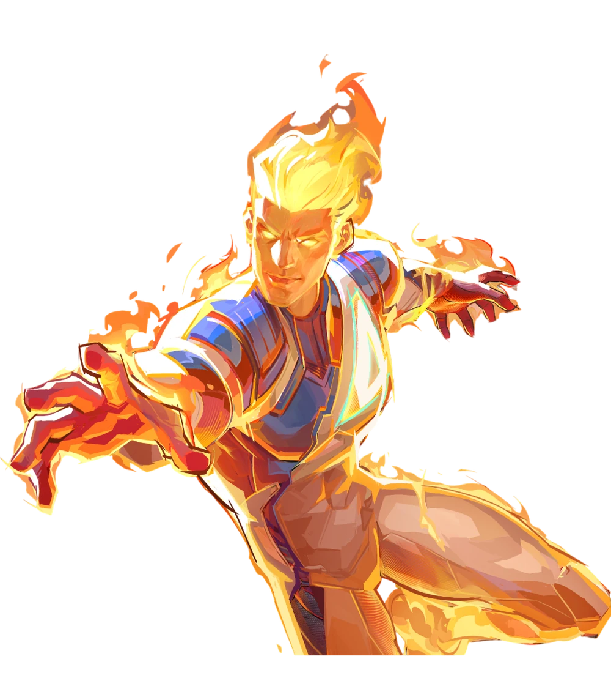

Кратко о герое
Джонні Шторм - молодий та повний енергії член сім'ї. Його здібність керувати полум'ям і летіти робить його одним з найпотужніших. Попри його гравійний характер, він правдивий герой та вданий брат.
Здібності та переваги
- Контроль над вогнем
- Політ
- Полум'яний взрив
- Сміливість та гумор